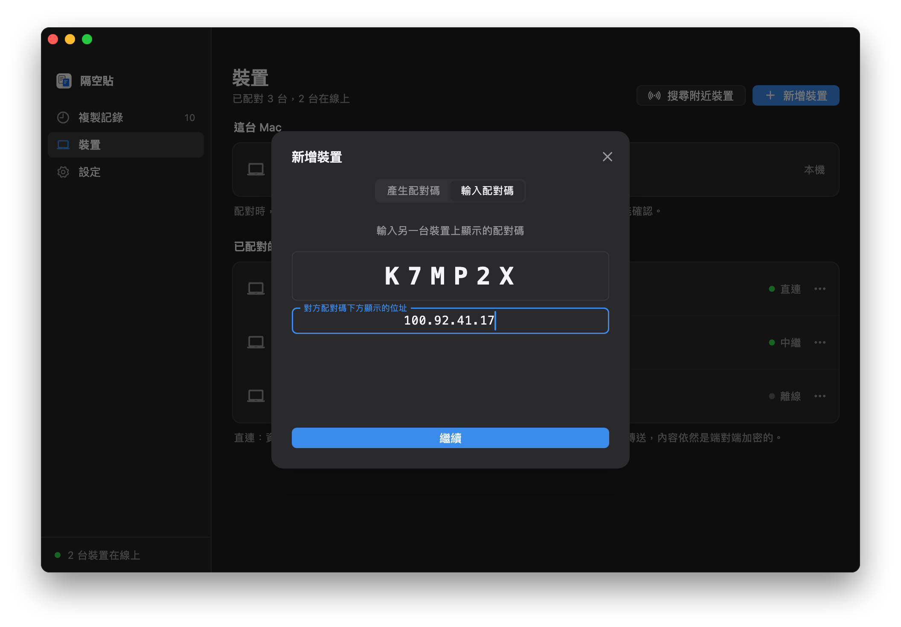

就像在同一個區域網路裡
Tailscale 是一套虛擬網路工具：裝了它、登入同一個帳號的裝置，各自會分到一個固定的 100 開頭的位址，不管實際在哪個網路裡，都能用這個位址互相連線。隔空貼配對時記住對方的這個位址，之後就像在同一個網路裡一樣直接連線。
- 不需要伺服器，也不需要一直開著的電腦：兩台電腦都開著、連著 Tailscale，就能同步。
- 位址只要輸入一次。Tailscale 位址不會變，配對時輸入一次，之後兩台會自動找到彼此。
- 兩層加密。Tailscale 的 WireGuard 通道裡，跑的是隔空貼自己端對端加密的連線，Tailscale 看不到內容。
開始之前
- 一個 Tailscale 帳號
- 個人使用免費，用 Google、Microsoft、GitHub 或 Apple 帳號就能登入。所有裝置都登入同一個帳號。
- 每台電腦都裝 Tailscale
- Windows、macOS、Linux 都有用戶端。使用隔空貼的電腦都要裝，並保持連線。
- 已經裝好隔空貼
- 每台電腦都裝好 App、啟用了背景同步，見快速入門。伺服器位址留空就行。
- 用 ZeroTier 也行
- 其他能幫每台裝置分配固定虛擬位址的虛擬網路工具，做法都相同：配對時輸入它分配的位址。下面以 Tailscale 為例。
第 1 步
在每台電腦上安裝 Tailscale
每台要同步的電腦都裝上，並登入同一個帳號。
- 到 Tailscale 官網下載對應系統的用戶端並安裝。Linux 上執行
curl -fsSL https://tailscale.com/install.sh | sh，再執行sudo tailscale up，打開它給出的連結登入。 - 打開 Tailscale 並登入。每台電腦都用同一個帳號。
- 登入後，在 Tailscale 的管理主控台能看到所有裝置，每台都有一個 100 開頭的位址。
| 裝置 | Tailscale 位址 | 系統 |
|---|---|---|
| macbook-pro | 100.88.20.5 | macOS |
| home-pc | 100.92.41.17 | Windows |
讓 Tailscale 一直保持連線
- Windows：在工作列右下角的 Tailscale 圖示上按右鍵，在「Preferences」裡勾選「Run unattended」，登出之後也會保持連線。
- Mac：確認 Tailscale 在登入後會自動打開。
- 關閉金鑰過期：Tailscale 預設每 180 天要求裝置重新登入一次。長期不動的電腦，可以在管理主控台的 Machines 頁面，點那一列最右邊的選單，選「Disable key expiry」。
第 2 步
查對方的 Tailscale 位址
在要配對的另一台電腦上點 Tailscale 的圖示（Mac 在選單列，Windows 在工作列右下角），選單裡能看到本機的位址；或在終端機裡執行 tailscale ip -4。
> tailscale ip -4 100.92.41.17
下面以家裡那台 Windows 的 100.92.41.17 為例，請換成你的位址。
第 3 步
配對時輸入這個位址
和在同一個網路裡配對一樣，只是多輸入一個位址。
- 在家裡那台 Windows 上打開「裝置」，點「新增裝置」，記下 6 碼配對碼。
- 在公司的 Mac 上點「新增裝置」，切換到「輸入配對碼」，輸入它；再點「不在同一網段？」，填上
100.92.41.17，點「繼續」。 - 兩邊螢幕會顯示同樣的兩行安全指紋，逐字核對一致後確認。之後兩台在哪裡都能同步。

兩台都在家裡時，隔空貼也會在區域網路裡直接找到對方，資料不會繞遠路。
常見問題
裝置之間顯示「直連」，速度卻很慢？
隔空貼顯示的「直連」，是指兩台電腦在 Tailscale 的虛擬網路裡直接相連。Tailscale 自己打不通兩台電腦時，會經過它在海外的中繼伺服器（DERP）轉送，在中國大陸使用就會比較慢。
在終端機裡執行 tailscale ping 對方的位址：顯示 via DERP，代表 Tailscale 正在走中繼；顯示 via 一個 IP 和連接埠，就是點對點。公司網路、校園網路比較容易遇到中繼，可以自建 DERP 中繼伺服器，或換一套虛擬網路工具。
配對時找不到對方？
先確認兩台的 Tailscale 都已連線：在終端機裡執行 tailscale ping 對方的位址，能 ping 通再試。
能 ping 通卻還是找不到，多半是對方的防火牆擋住了：對方是 Windows 的話，在它的隔空貼「設定 → 區域網路」裡點「允許」；是 Mac 的話，確認「系統設定 → 隱私權與安全性 → 本機網路」裡已開啟 PasteFerry Daemon。
一定要每台電腦都裝 Tailscale 嗎？
是的，沒裝的電腦連不到 100 開頭的位址。兩台在同一個網路裡時，不裝也能用，見同一網路教學。
以前照著教學在家裡裝過伺服器，還需要它嗎？
不需要了。在每台電腦的「設定」裡清空伺服器位址，再到家裡那台電腦上解除安裝伺服器即可，已經配對的裝置不用重新配對。留著也沒關係，伺服器和 Tailscale 可以同時使用。
Tailscale 能看到我複製的內容嗎？
不能。Tailscale 的連線用 WireGuard 端對端加密，裡面跑的又是隔空貼自己的 DTLS 加密連線，兩層都只有兩台電腦能解開。Tailscale 的伺服器只交換裝置的公鑰和位址，中繼伺服器也只轉送加密後的封包。
Tailscale 位址會變嗎？
一般不會。位址跟著裝置走，重新開機、換網路都不會變；只有把裝置從 Tailscale 裡刪除再重新加入，才會換一個。換了的話，在「裝置」裡幫那台裝置重新輸入一次位址。
我有雲端伺服器，還需要 Tailscale 嗎？
不需要。把伺服器架在有公用 IP 的機器上，所有電腦填它的位址就行，見雲端伺服器架設教學。